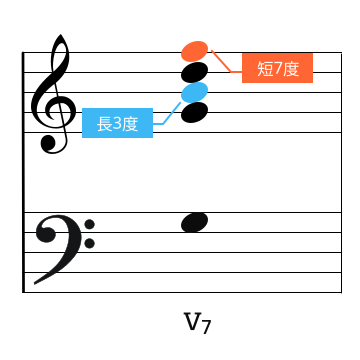

本篇是一期专门“解锁全新和弦名称与代号”的进阶特辑。
在以往掌握的大三和弦与小三和弦的基础上继续叠置新的音符，使声响更加丰满华丽。这是将我们的和声视野整整拓宽一个层级极其关键的一课。 虽然在追求极致纯粹力量的硬摇滚或极简舞曲中重要性稍弱，但只要不是风格极度纯直单一的乐曲，七和弦都是现代音乐中最基础、最通用的核心和弦群。
[gt_radar_chart id=”gt-radar-genrechart” width=”” height=”240″ labels=”J-Pop,Jazz,Classic,Cinematic,Electronic,Pop,Rock” animation_type=”radarar”][gt_chart_data fill_color=”#2060db” stroke_color=”#2060db” data=”100,100,90,100,90,100,80″][/gt_radar_chart]
 1. 七和弦（Seventh Chords）
1. 七和弦（Seventh Chords）
在“六大基调和弦”一课中，我们曾探讨过音符的叠置方式，并提到现代爵士乐理是以叠置4层的和弦作为一切理论展开的起点：

叠置在原本 Rt（根音）、3rd（三音）、5th（五音）之上的第4个音，与根音形成“7度”音程，因而被称为第7音（7th）；而包含7度音的四音和弦，统称为七和弦（Seventh Chords）。 在“七和弦与引申音的活用”中，我们曾介绍过添加七音是所有加音中最不容易翻车、最容易上手的技法，可能不少朋友早已经在实战中偷偷用起来了。本篇中，我们将对七和弦的构造法则、和弦名称以及标准化代号展开严谨透彻的系统梳理。
纯粹听觉对比
首先让我们通过纯粹的三和弦与七和弦进行横向对比聆听：
纯三和弦版
和弦进行为经典的 IV - V - IIIm - VIm - IIm - V - I，属于教科书级别的流行乐标准走向。三和弦清澈透亮、直抒胸臆的直率感极具魅力。现在我们把全部和弦一律替换为七和弦：
七和弦版
仅仅是每个和弦多加了一个音，整体声响的丰富度瞬间实现质的飞跃！音响不仅多了一层深邃厚重的底蕴，整体格调也瞬间变得极为时髦高级。既然爵士乐以七和弦为常态，那么在所有受到爵士乐滋养浸润的现代流派中，日常高频使用七和弦本就是再自然不过的事情。
七和弦在物理声学上（抛开八度差异不谈）相当于“在 Do 上叠加了 Si”、“在 Sol 上叠加了 Fa”，本质上是在同时弹响自然音阶中紧挨着的相邻二度音，因此天然带有适度的碰撞感。然而由于其严格遵循了平整优雅的三度叠置，整齐的几何构架赋予了它极佳的声学自洽度——犹如一位“攻守兼备、兼具锋芒与平衡的全能战士”。 在编配时，若把这颗7音置于最顶端的高声部，就会散发出“毫不掩饰的时髦高级感”；若将其埋入中低声部织体中，则能营造出“不着痕迹的深邃层次”：

添加七音并不会破坏原有大和弦/小和弦的底色骨架，由于全程不产生任何离调变音记号，融入曲目中极为自然丝滑，能为原本素雅的乐段披上一层华美的大衣。
钢琴名曲中的七和弦魅力
只要精妙运用七和弦，光凭它自身就足以撑起一首传世名作的灵魂骨架：
纯三和弦版
这是一段不断在 IV 与 I 之间往复摇摆的和弦进行。单听三和弦显得有些平淡质朴；然而一旦将其全部升格为七和弦，并微调高音旋律线之后……
七和弦版
奇迹诞生了！！这正是法国印象派音乐先锋埃里克·萨蒂（Erik Satie）的不朽名作《第一号裸体歌舞（Gymnopédie No. 1）》！整首名作的全部魔力，正是源自七和弦那绝妙的微苦与空灵碰撞——七和弦本身蕴含的声学张力，足以强大到单凭自身就让一首乐曲名垂青史。
吉他摇滚中的七和弦
不仅是钢琴，在纯正的吉他摇滚中，七和弦同样大有用武之地：
纯三和弦版
这是三和弦状态下的吉他扫弦，直白干脆但稍欠韵味。我们将所有和弦升级为七和弦，验证其声学演变：
七和弦版
在编曲中，中间声部的吉他统一将七音置于最高声部；三把吉他交织在一起，共同拼贴出一个完整的七和弦织体。随着碰撞层级的提升，一股更加立体、饱经沧桑的成熟气质跃然纸上！ 令人赞叹的是：即便只是机械式地给每个和弦加上七音，整段旋律仿佛瞬间被注入了某种深沉的叙事性。声响一旦复杂丰富起来，便具备了直击人类情感共鸣的强大心理暗示——简而言之，七和弦能轻而易举地为乐曲赋予一种直击灵魂的**“动人宿命感（Emo感）”**。
张弛有度与减法美学
当然，通篇从头到尾无休止地狂轰滥炸七和弦，久而久之同样容易让人陷入审美疲劳。**明确区分哪里需要浓郁复杂的和声、哪里需要回归至简的留白，做到张弛有度（メリハリ）**才是高级编曲的真谛：
在刚才这段音频的尾声处，吉他突然收拢为纯粹干净的单音旋律线条，原本复杂的空间骤然收缩，带来了一种令人心头一颤的惊喜冲击！未来我们还会解锁更多前沿复杂的和弦，但越是如此，越要时刻牢记**“减法美学”**的无上智慧。
因此大家可以在脑海中树立起如下的和声浓度参照标尺，根据不同段落的意境诉求因地制宜地调用：

不同流派对复杂度的容忍阈值大相径庭：在经典摇滚与纯粹 EDM 中，人们偏爱干净纯粹的直率平衡；在古典主义传统中，除了属和弦 V 之外，其余音级使用七和弦受到严格审视与限制，依然以三和弦为基调； 而在现代爵士乐中，七和弦则是理所当然的第一公理，三和弦反倒被视作“特意把七和弦抽掉七音后的简写”。
2. 构成音与精确命名系统
接下来进入具体的度数构造与和弦代号命名法。这涉及到一定的数字记忆，但逻辑极为严密规整。
三和弦命名法则复习
先来复习一下三和弦名称的底层逻辑。六大基调和弦分为大和弦与小和弦两派：

二者的分水岭在于根音到三音的音程是【4个】还是【3个半音】。在精确度数中，距离长者被称为“大三度（Major 3rd）”，短者被称为“小三度（Minor 3rd）”：

大三度对应大三和弦（Major Chord），小三度对应小三和弦（Minor Chord）——度数性质与和弦名称直接绑定。
七和弦的度数构造
七和弦完全遵循同一套严谨逻辑：关键在于最上方的七音距离根音究竟隔了多少个半音。让我们再次将顺阶七和弦纵向剖开透视：

观察最顶端的七音，它们明确分化为相距**【11个半音】与相距【10个半音】两派。距离较长（11半音）的被称为大七度（Major 7th）；距离较短（10半音）的则被称为小七度（Minor 7th）**：

如果此处能像大/小三和弦那样整齐地平分为 3:3 就完美了；然而大自然在这里打了个小结——呈现为 2 vs 4 的格局，V 级和弦在此成为了一个与众不同的特殊存在：

- I 与 IV 级：三度是大三度、七度也是大七度（双“大”）。
- V 级：三度是大三度、七度却是小七度（大三配小七，全家独一份）。
- IIm、IIIm、VIm 小和弦三人组：三度是小三度、七度也是小七度（双“小”）。
七和弦的标准命名规则
七和弦的命名规则非常直观：在原本三和弦名称的尾部，追加标示出七度的属性：

大七度被称为“大七和弦（Major Seventh）”，国际上常用的缩写符号有几种，而在本站中我们采用最一目了然、最不容易引发字形混淆的“Δ7”（如 CΔ7）或“maj7”。 遵循该法则，六大基调和弦的七和弦标准化代号如下：

- 最特殊的 V 级享有最极简的待遇：直接在根音后标注“7”（如 G7）。
- I 和 IV 级冠以“Δ7”（或 maj7，如 CΔ7、FΔ7）。
- 小和弦三人组在原本的“m”后面直接追加“7”，合体为“m7”（如 Dm7、Em7、Am7）。
记忆口诀非常清晰：“唯独 V 级最特殊是纯粹的 7，其余成员大三和弦变 Δ7，小三和弦变 m7”。
组合数学的完整图景
对于思维敏锐的朋友，可能会立刻敏锐发现一个逻辑盲点： 既然有“大/小三度（2种）”与“大/小七度（2种）”，按组合数学 $2 \times 2 = 4$，世间理应存在 4 种基础七和弦才对，为什么顺阶和弦里只介绍了3种？

完全正确！在顺阶基调和弦中，确实遗漏了**“小三度 × 大七度”**这一组合。 如果遇到这种组合该如何命名？完全遵循上述拼装规则即可：“小三度”赋予其“小（Minor）”之名，“大七度”赋予其“大七（Major Seventh）”之名，合体拼装便诞生了——小大七和弦（Minor Major Seventh / マイナーメジャーセブンス），代号写作 mΔ7 或 m(maj7)！

名字虽然听起来又长又绕口，但逻辑严密对称。
小大七和弦的实战现身
小大七和弦在流行乐中最经典的登场场景，正是将 IVΔ7 的三音性质变换为小和弦的瞬间：

原本三度和七度皆为“大”的 IVΔ7，仅仅将其三音降半音变为小三度，便立刻诞生出了“小三度 × 大七度”的奇妙结晶——IVmΔ7。它散发着一种极具妖艳毒性、神秘莫测的高级张力（如著名的 007 詹姆斯·邦德主题和弦）。
体系总览对照表
将四大核心七和弦的度数与命名法则完整梳理汇总如下：

统一以 C 为根音对比
将四类七和弦全部置于同一根音 C 上横向排开：

需要留神一个初学者极易踩坑的错觉：看似最普通的“C7”，实际上却必须包含黑键（B♭），绝非全白键和弦！
秒辨大七度与小七度的物理捷径
如果一时半会儿数不清包含多少个半音，有一个极其高效的神速判别技巧： “大七度音（Major 7th），就是根音下方半音（小二度）的那个音”； “小七度音（Minor 7th），就是根音下方（大二度）的那个音”！


与其向上艰难地数10个或11个半音，直接向下看一个八度显然快如闪电。在键盘演奏或吉他排指法时，这套倒推法堪称神技。
属七和弦（Dominant Seventh）的专有称谓
顺便厘清一个交流中的术语重叠盲区： 当人们在口头说出“七和弦（Seventh Chord）”这四个字时，往往容易引发歧义：究竟是指“包含七音的这一大类和弦统称”，还是专指“大三度配小七度（如 G7）的那个特定和弦”？ 这就像某些乐队把自己乐队的名字直接当作出道同名专辑名一样，母集与子集重名了：


为了彻底消除这一沟通歧义，在专业乐理中，为“大三度配小七度”的这个和弦赋予了更为严谨的尊贵专称——属七和弦（Dominant Seventh / 大小七和弦）：

“Dominant”原本正是“调式第5音”的学名。因为它是唯独在第V级和弦上才会天然诞生的特殊七和弦，故冠此名。 在平时乐队排练看谱时，随口念作“G-Seven”即可；而在严谨讨论和声理论功能时，使用“属七和弦（Dominant Seventh）”则最为专业准确。
古典乐理与爵士乐理的哲学差异
作为拓展：在古典和声学的传统罗马数字记谱法中，数字符号与音程度数并不是一一对应的。在古典记法中只要标上一个“7”，其含义是：“顺着调式音阶自然叠置出的顺阶七和弦”：

因此在古典乐谱分析中，所有没有升降号的顺阶七和弦统统统一写成“7”。阅读古典文献时切莫误解为它们全都是属七和弦。 这深刻折射出了古典与爵士两大流派的哲学分歧：古典音乐以视奏照谱演奏为主，罗马数字主要用于曲式事后“分析”，既然调性早已明确，“顺应音阶、毫无离调”自然只需简单标个 7； 而催生出和弦代号体系的现代爵士乐，其核心驱动力是即兴演奏，调性瞬息万变。为了让乐手哪怕不清楚当前调性、只要看一眼符号就能瞬间准确按出绝对音符，必须建立一套彻底脱离调性语境、绝对客观严密的系统代号体系。 流派差异并非谁对谁错，而是各自深深植根于自身特定的音乐实践土壤之中。
总而言之，和弦代号虽然初看似有繁复，但实际运用极为亲民：只要顺着当前音阶、不额外产生临时升降号去叠置4个音，它就必然是该和弦在调内最正统的原生七和弦！
至于大七与小七的度数辨析，完全无需在书桌前痛苦死记，随着在创作实战中不断弹奏体验，很快就能形成肌肉记忆与听觉直觉。从今天起，大胆把七和弦融入你的创作中，享受那份深邃时髦的声学饕餮吧！
总结
- **七和弦（Seventh Chords）**是指在根音、三音、五音之上叠置第7音所构成的四音和弦统称。
- 七和弦所附加的七音，分为**大七度（Major 7th）与小七度（Minor 7th）**两大类。
- 与大三/小三和弦组合，世间共存在 大七、属七、小七、小大七 4大核心基础七和弦。